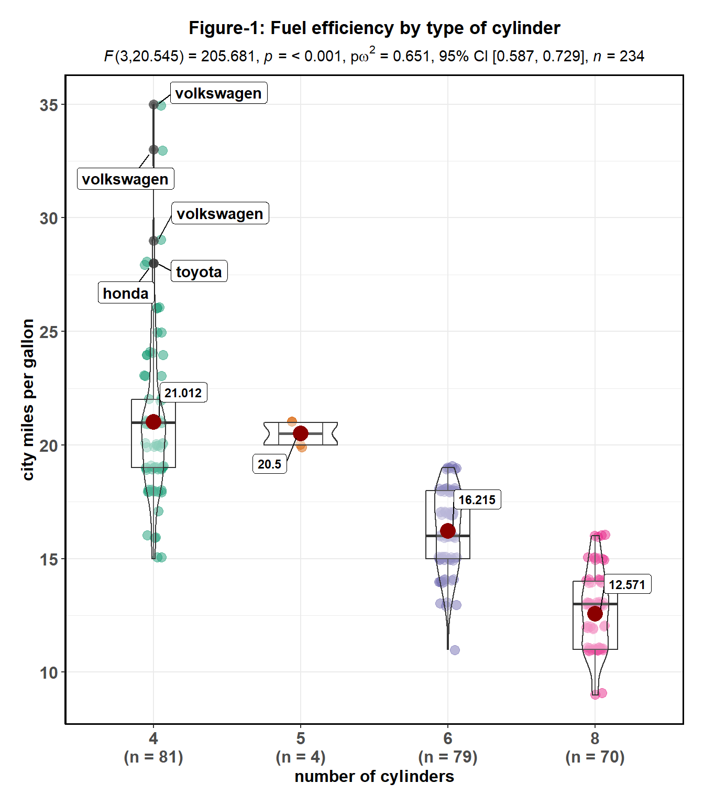
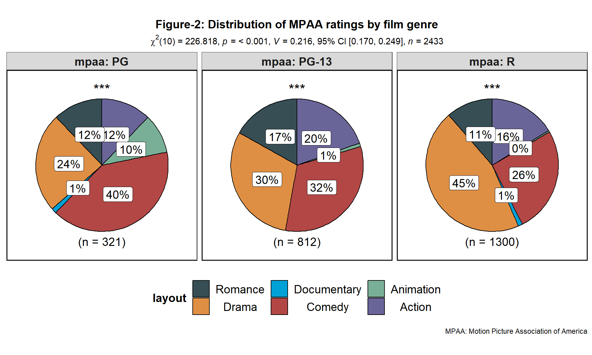

graphics_design.RmdThe ggstatsplot package is an opinionated collection of plots made with ggplot2 and is designed for exploratory data analysis or for producing publication-ready. All plots share an underlying principle of displaying information-rich plots with all necessary statistical details included in the plots themselves. Although the plots produced by ggstatsplot are still ggplot objects and can thus be further modified using ggplot2 commands, there is a limit to how many such modifications can be made. That is, it is less flexible than ggplot2, but that’s a feature and not a bug. The original intent behind this package is to offload struggles associated with constructing the plot and focus more on the interpretation of that data displayed in the plot.
(This vignette is still a work in progress)
ggstatsplot::ggbetweenstats(
data = ggplot2::mpg,
x = cyl,
y = cty,
title = "Figure-1: Fuel efficiency by type of cylinder",
xlab = "number of cylinders",
ylab = "city miles per gallon",
ggtheme = ggthemes::theme_fivethirtyeight(),
ggstatsplot.layer = FALSE,
outlier.tagging = TRUE,
outlier.label = manufacturer,
messages = FALSE
)
#> Note: 95% CI for partial omega-squared was computed with 100 bootstrap samples.
#> 
The package follows two principles for graphical integrity (Tufte, 2001, Chapter 2):
The physical representation of numbers is proportional to the numerical quantities they represent (e.g., Figure-1 and Figure-2 show how means (in ggbetweenstats) or percentages (ggpiestats) are proportional to the vertical distance or the area, respectively).
All important events in the data have clear, detailed, and thorough labeling (e.g., Figure-1 plot shows how ggbetweenstats labels means, sample size information, and outliers; same can be appreciated for ggpiestats in Figure-2).
All plots are designed to have no chartjunk (like moiré vibrations, fake perspective, dark grid lines, etc.) (Tufte, 2001, Chapter 5).
ggstatsplot::ggpiestats(
data = ggstatsplot::movies_long,
main = genre,
condition = mpaa,
title = "Figure-2: Distribution of MPAA ratings by film genre",
legend.title = "layout",
caption = "MPAA: Motion Picture Association of America",
package = "ggsci",
palette = "default_jama",
messages = FALSE
)
Graphical perception involves visual decoding of the encoded information in graphs. ggstatsplot incorporates the paradigm proposed in Cleveland (1985, Chapter 4) to facilitate making visual judgments about quantitative information effortless and almost instantaneous. Based on experiments, Cleveland proposes that there are ten elementary graphical-perception tasks that we perform to visually decode quantitative information in graphs (organized from most to least accurate 1)
There are few instances where ggstatsplot diverges from recommendations made in Cleveland’s paradigm: *
p = 0.000. Even though this statistical expression, used in over 97,000 manuscripts according to Google Scholar, makes regular cameo appearances in our computer printouts, we should assiduously avoid inserting it in our Results sections. This expression implies erroneously that there is a zero probability that the investigators have committed a Type I error, that is, a false rejection of a true null hypothesis.
All p-values displayed in ggstatsplot plots avoid this mistake. Anything less than p < 0.001 is displayed as such. The package doesn’t care how infinitesimally small the p-values are. Instead, the emphasis is put more on the effect size magnitudes and their 95% CIs.
“The ordering is based on the theory of visual perception, on experiments in graphical perception, and on informal experimentation.” (Cleveland, 1985, p.254)↩